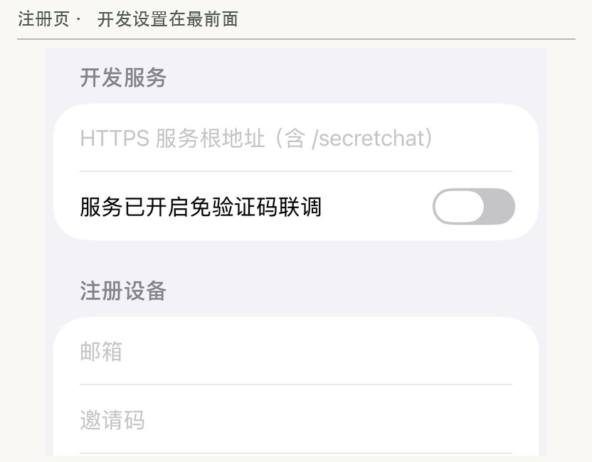
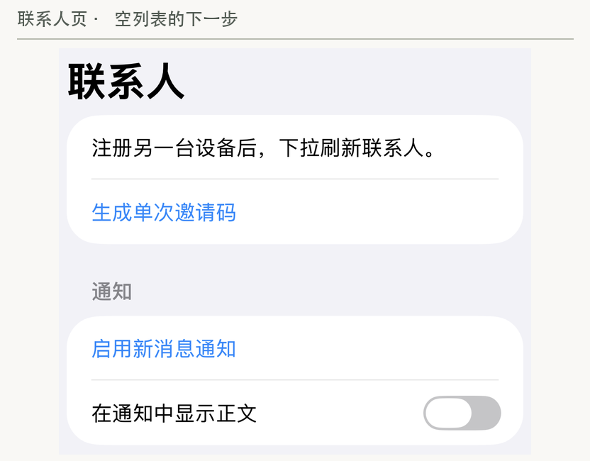
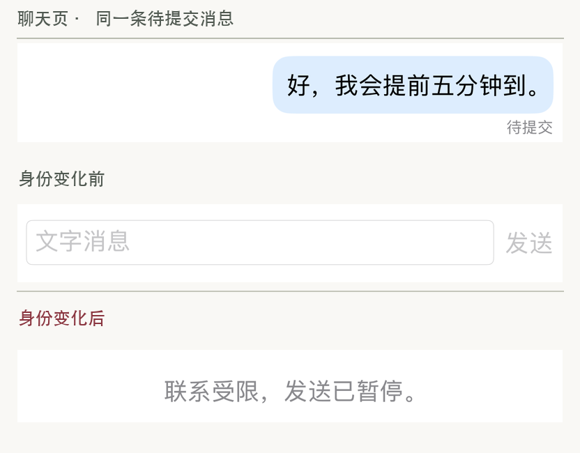
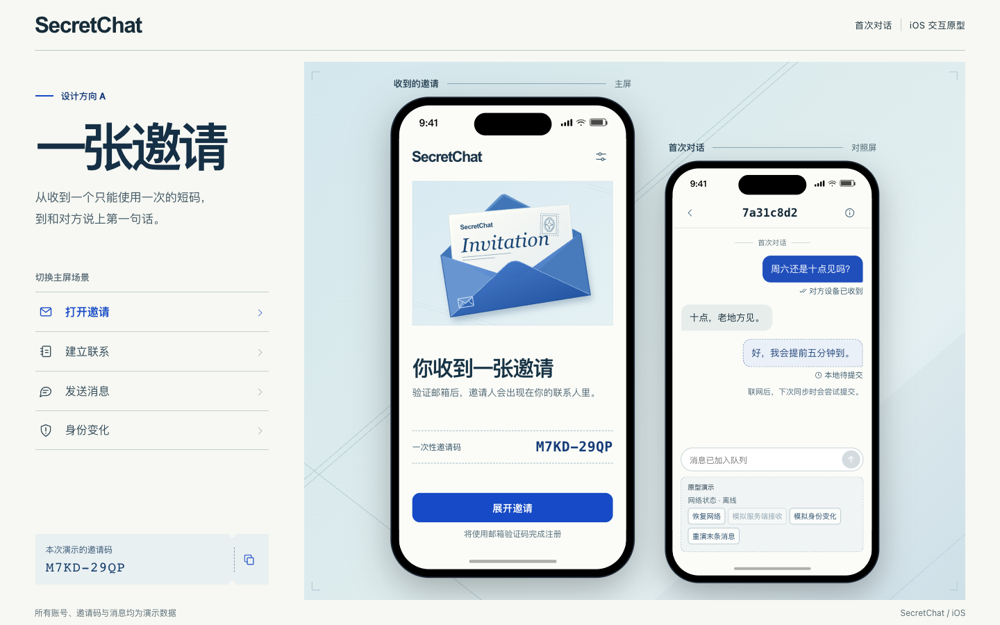
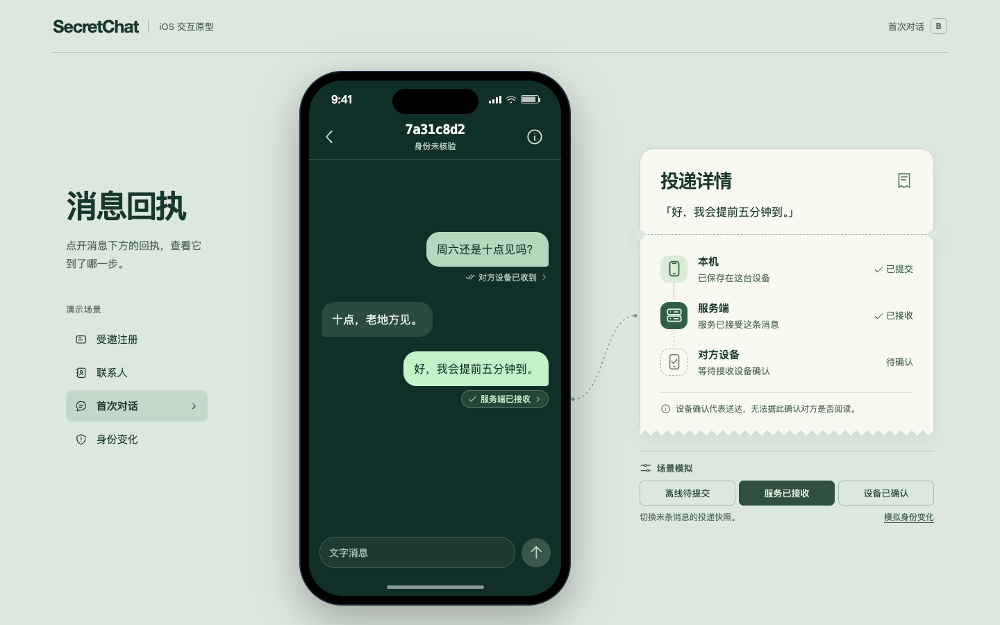
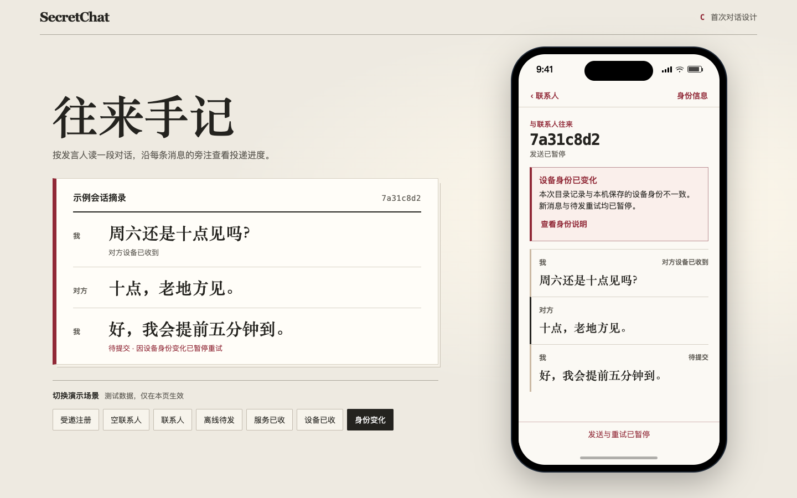

受邀者先碰到开发配置
页面先问 HTTPS 服务根地址和免验证码开关。手里已经有邀请码的人，要先弄清服务地址，才能获取邮箱验证码。
查看注册原图先看现有客户端里三个容易卡住的地方，再用同一段约见对话试用三个设计方向。

页面先问 HTTPS 服务根地址和免验证码开关。手里已经有邀请码的人，要先弄清服务地址，才能获取邮箱验证码。
查看注册原图
「注册另一台设备后，下拉刷新联系人」容易让受邀者以为自己还需要第二台设备。受邀者应刷新找邀请人，首账号应生成并分享单次邀请码。
查看联系人原图
普通会话已有「待提交」和设备收件标签。身份变化后，输入框换成「联系受限，发送已暂停。」，却没有说明哪项身份记录变了，或那条待发消息还能否重试。
原图来自 iPhone 模拟器中的现有 SwiftUI 页面，使用合成账号、联系人和消息。上方取景放大了与问题相关的部分。
可以从注册一步步走，也可以跳到某个状态。比较「好，我会提前五分钟到。」从本地排队到对方设备确认的变化，再试一次身份变化。

点「展开邀请」，用邮箱和短码加入。两台可操作的手机把邀请和第一句话放在一起。

点末条气泡下的回执，再切换「离线待提交」和「设备已确认」，看每一步由谁确认。

点「查看身份说明」，了解设备标识或身份公钥为何与本机绑定不一致。会话按发言人排列，回执跟随每句话。
三个原型均使用本地测试数据，可直接打开 HTML。普通注册预设服务根地址；开发联调保留修改地址和免验证码选项。对方设备确认仅表示收件，客户端无法判断是否阅读。